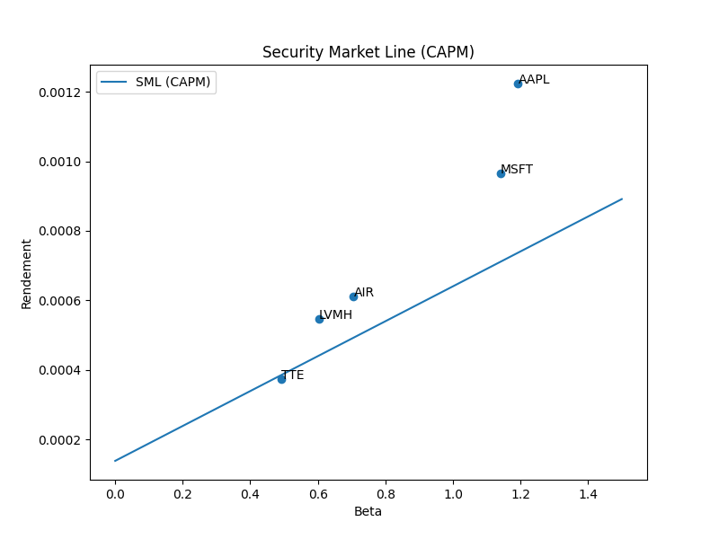
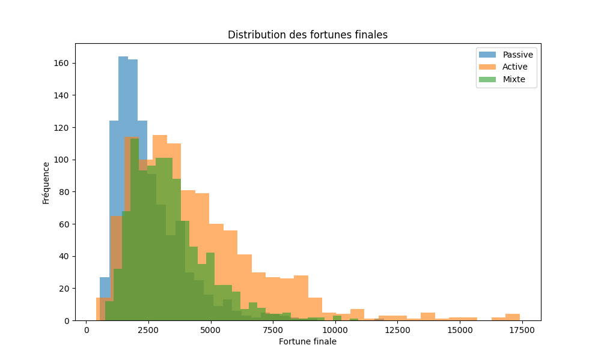

Pourquoi cette page est importante ?
Les graphiques jouent un rôle central dans notre projet, car ils permettent de transformer des calculs financiers abstraits en représentations visuelles beaucoup plus intuitives. Grâce à eux, nous pouvons observer la relation entre le risque et le rendement, vérifier si les résultats obtenus sont cohérents avec le modèle CAPM, et interpréter plus facilement le comportement des entreprises étudiées.
Cette page présente donc les deux graphiques les plus importants du projet : la relation entre le bêta et le rendement réel, puis la Security Market Line, qui représente la droite théorique du CAPM.
Relation entre le bêta et le rendement réel
Ce premier graphique représente la relation entre le bêta d’une action et son rendement réel moyen. Le bêta mesure la sensibilité d’une entreprise aux variations du marché : plus il est élevé, plus l’action est considérée comme risquée au sens du CAPM. Le rendement réel correspond au rendement moyen effectivement observé dans les données historiques.
Chaque point du graphique correspond à une entreprise. Plus le point est situé à droite, plus le bêta est élevé. Plus il est situé vers le haut, plus le rendement observé est important. Ce graphique permet donc de vérifier visuellement si les actions les plus risquées ont aussi tendance à offrir les rendements les plus élevés.
Dans notre projet, on observe globalement une relation croissante entre le risque et le rendement. Des entreprises comme Apple ou Microsoft se situent dans une zone où le bêta et le rendement sont plus élevés, tandis que des entreprises plus défensives comme TotalEnergies ou LVMH apparaissent avec des niveaux de risque et de rendement plus faibles. Cette observation est cohérente avec l’intuition fondamentale du CAPM : un risque plus élevé doit être rémunéré par un rendement plus important.

Security Market Line
La Security Market Line, ou droite du marché des titres, est la représentation graphique du modèle CAPM. Elle relie le niveau de risque mesuré par le bêta au rendement théorique attendu. La droite elle-même correspond aux rendements que le CAPM prédit pour chaque niveau de bêta.
Sur ce graphique, les points représentent à nouveau les entreprises étudiées, mais cette fois ils sont comparés à la droite théorique du CAPM. Cette comparaison est essentielle, car elle permet d’évaluer si le rendement réel d’une action est supérieur, égal ou inférieur au rendement attendu compte tenu de son niveau de risque.
Lorsqu’une entreprise se situe au-dessus de la droite, cela signifie que son rendement réel est supérieur au rendement théorique du CAPM. Elle peut alors être interprétée comme potentiellement sous-évaluée, car elle offre un meilleur rendement que celui prévu pour son niveau de risque. À l’inverse, lorsqu’une entreprise se situe en dessous de la droite, cela signifie que son rendement réel est inférieur au rendement attendu, ce qui peut suggérer une surévaluation relative.
Ce graphique est particulièrement important dans notre projet, car il constitue le lien direct entre la théorie financière et les données observées. Il permet de confronter le modèle CAPM aux résultats obtenus à partir des actions réellement étudiées.

Lecture économique des deux graphiques
Ensemble, ces deux visualisations permettent de mieux comprendre la logique du CAPM. Le premier graphique montre que le rendement réel tend à augmenter avec le niveau de risque. Le second ajoute une dimension plus fine : il permet de voir si le rendement réellement observé est cohérent avec ce que le modèle prédit théoriquement.
En combinant ces deux lectures, on obtient une analyse plus complète. Une action peut avoir un rendement élevé, mais cela ne signifie pas automatiquement qu’elle est attractive : tout dépend aussi du niveau de risque qu’elle implique. C’est précisément pour cela que le CAPM reste un outil central en finance : il permet de comparer rendement et risque dans un même cadre d’analyse.
Distribution des fortunes finales
Ce graphique représente la distribution des fortunes finales obtenues après les simulations de Monte Carlo. Il permet de visualiser non seulement la moyenne, mais aussi la dispersion des résultats selon la stratégie d’investissement retenue.
Chaque histogramme montre la fréquence des fortunes finales possibles pour une stratégie donnée. Une distribution très étalée traduit un niveau de risque plus important, car les résultats possibles sont très dispersés. À l’inverse, une distribution plus resserrée traduit une performance plus stable.
Dans notre projet, ce graphique permet de comparer directement le comportement de la gestion passive, de la gestion active et de la gestion mixte. Il complète donc l’analyse des probabilités et des temps d’atteinte en donnant une vision plus complète du risque.

Limites à garder en tête
Les marchés financiers évoluent dans un environnement complexe, influencé par de nombreux facteurs qui ne sont pas entièrement capturés par le CAPM. Il est donc important d’utiliser ces graphiques comme des outils d’analyse et d’apprentissage, et non comme des garanties de performance future.